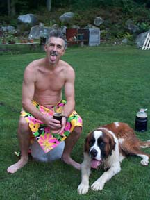

Hungry Hill Hash
Run: #855 September 16, 2002
Hare: The Slasher Dr. WHO
Location: Coventry/West Greenwich
Scribe: The Raging Queen of Beers
Weather: Clearing, after torrential downpours washed away what little flour the cheap and
pathetic hare placed stingily along the trail, if you can call it that, and temperature was too comfortable also, being in
the 60’s
Present:
Dr WHO (hare), Bondo Jovi, Basket Boom Boom, Async, WIPOS, Oozing, Raging Queen, Fuwangi Boner, EverReady, Summer’s Eve
Seven Year Bitch, Treehouse, Tinker, KNO, Jake, Ben and Baxter.
Visitor: Muffalotta
Commemorating: Baxter’s Last Run (May he hash in peace).
The Run:
Well, at least the hare got one thing right. He set the start from Marks’ (exit 6 not 6A) where I could find it easy, and not too far from Connecticut either. Everyone gathered and I must say it was a sorry sight. The rain stopped at 6:15 and they all got out of their cars, as if they were afraid they might of got wet or something. I’m a chemist, and I know people are basically waterproof or water-resistant or something. And what a bunch of old cripples! I may have to start my own hash down in old Grotty.
The hare began to whine about the rain washing away his flour. I took a swig from my Bud Light and tried not to listen. But it was hard to drink secretly because Bondo might have seen it and tried to get some. And all these Coventry cops kept pulling into the Dunkin’ Donuts. But anyway, the hare provided secret instructions for the crippled wankers Async and Tinker, and for Basket so as to protect Baxter (who was the only one worth anything at this hash anyways and you’d never see him turn up his nose at a Bud Light for sure). The rest of us took off into the woods on a freakin’ path! I mean where’s the swamp shiggy?
I was following Fuwangi Boner and TreeHouse. These guys can run. It was like they were being chased by Ben with an erection. Oh, that’s right, they were! Behind me Oozing, Hoover (SESYB), Muffalotta (woo-hoo!) and the hare jogged along, with Bondo, EverReady and KNO doing some kind of threesome thing in the rear. There were lots of checks, but no one except the Boner could see them. And he didn’t even have a flashlight. I guess he is good at seeing rings in the dark. We headed roughly north and came to a road. Some of us crossed and tried to go for a swim in a fishing area. Oozing must have had a spat with Hoover (SESYB) cause he took off alone south along the riverbank. The hare finally wheezed his way up to us and started marking arrows on the road with some chalk. He could at least have brought a few freakin’ Buds if he could remember to bring chalk.
We crossed the river at a bridge and went about 100 yards on Harkney Hill Road. Then we turned onto a dirt road that went behind a field. Lots of good puddles. Then we were back on another piece of freakin’ pavement. I had on my new camouflage gear (WIPOS told me where I could get a deal) and had been counting on some briars to test them. Boy, was I getting freakin’ mad. I gave up a seminar on conjugating Esters for this. We milled around on Fish Hill Road for a while looking for any sign of powder. Apart from a Colt 45 can that had only one good swig left in it (it’s gassy, but better than nothing), I couldn’t find anything. The hare caught up again and made with his chalk like the marks had been there all along. What a wank! South we ran. We turned into a dirt road where a sign said you need to wear neon orange for turkey season. For these guys it’s always turkey season, but I didn’t see any freakin’ neon orange.
We headed into a sandpit and things started to look up a bit. The puddles in the trail were deeper, and still somehow, the TreeHouse guy and Fuwangi Boner managed to find trail or at least pretend they did. The hare behind me took all the false trails by mistake. He may have been trying to get alone with Muffalotta, or the Hoover (SESYB) but Bondo kept showing up. Actually, up in front we could keep tabs on the slow guys behind us just by listening for the sounds of Bondo in the woods (F*ck this sh*t!, F*ckin’ a**hole!, etc.). We went through some prime shiggy finally, unavoidable puddles with rusting metal garbage and Bud Light cans (empty, dammit!) hid just below the surface. The trail led between two ponds and then turned west, and uphill.
Meanwhile, the walking wounded had reached the beer check well before us, even with Fuwangi leading us on. This was high atop another sand mound near Camp Bosco, You see, Dr WHO isn’t the only one who can read a freakin’ topo map! They quickly found the beer, which the hare couldn’t hide anyways, not with Basket and Tinker to sniff it out. They finished off the Bud Light before I made it in, those bastards, and all I was left with was some namby-pamby yuppie brown stuff in a juice jar. Everyone straggled in gradually, except Oozing who was on the wrong side of the river. He had run into WIPOS, and the two off them swapped tales about what hotshot hashers they were, and too bad the rest of the pack was lost. The group sang some pathetic songs and waited a while for Oozing until the Hoover (SESYB)said “Screw him, I want supper!” so we hit the trail again.
Trail came out on the access road to the fishing area, but there were no marks, just a gay couple in a car drinking Bud Longnecks. I was tempted to join them, but the hare led the way across the river up to his tits in shiggy so I had to follow. We came through some briars at last and went uphill where we found Oozing and WIPOS sharing a cigarette. We had an impromptu second beer stop for them (OK by me, I was hoping they’d finish off that freakin’ swill before we circled up) and had to listen to their excuses for a while. Trail led back east uphill and most of us abandoned the flour–free fiasco when we came to the motel on Rt3. We came back to the cars by way of the street.
It turned out that the hash was a success in some respects at least. Ben was missing, Basket and Tinker were temporarily missing (actually, Basket had to relocate Tinker’s fake hips that he knocked out trying to get over the bridge rather than going through the water), and the Hoover (SESYB) or EverReady or somebody bought donuts. Bondo drove off to find Baxter or Ben. Eventually, Basket, Baxter and Tinker emerged from the woods, saying “Quick, let’s get out of here before Bondo gets back!” Finally, the circle was joined. I had to slip a couple of Bud Lights into my shorts so’s I could refill during the circle. Ratings for the run: who cares, we all know it freakin’ sucked. I think he ended up with a 0.69, but it was so long ago, I can’t remember. And I was on my second Bud, so I was pretty wasted. Hashit should’ve gone to Oozing for frolicking in the woods with WIPOS or maybe to Async for whining about his back. Somehow I think it ended up with Bondo. Good! I hope it will teach him to start beechwood aging his freakin’ home-brews.

Basket and his Master
A few lousy songs later and we swung low, and moved into the restaurant. We were still missing the hound Ben. Luckily, as soon as we entered Mark’s, the waitress said that the Animal Shelter had picked up a stray Labrador that was sexually assaulting some poultry over near Lake Mishnock, and could Bondo please pick him up in the morning. Bondo began to curse (how unlike him) and swore he would never pick up the f*ckin’ moronic, f*ckin’ annoying son of a f*ckin’ b*tch. We were quickly moved to a new table situated as far as possible from the real customers. The waitress allowed Basket to bring Baxter in, and Baxter was served a Philly Cheesesteak. The rest of us ate and drank, and we all said our farewells to Baxter. He was a real hasher (unlike his owner or the hare for that matter) and we'll freakin’ miss him.
On On
The Raging Queen of Beers.